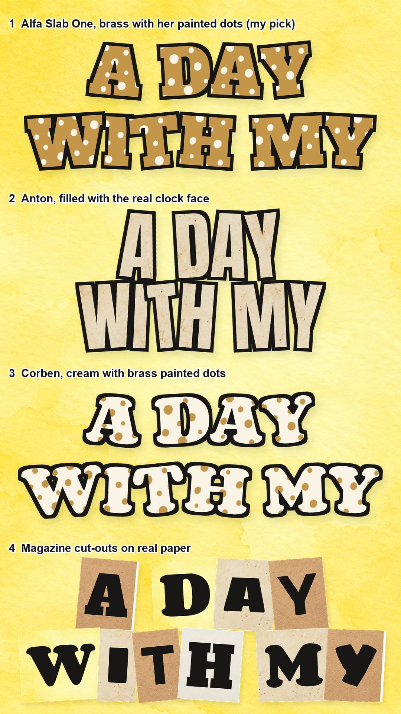

Physical pack: #11 and #20 motion tests (your notes applied)
Rough renders to show the motion as a living collage: tiles that slide, flip, peel and swap, real cut-outs across the seams, every transition, the doodles drawing on. The footage is
a stand-in from your July clips; buyers drop in their own. Notes reach Claude as you type. #07 and #15 are dropped, as you said.
#11 A day with it
What happens, in order:
the morning collage, all one texture toned cream; the one alarm clock rings across the seams, a latte crosses a seam
zoom out: the clock wheel of four clips; the hour hand points at 7, the morning slice is lit
the hand sweeps to 12 and the tiles turn butter one by one; the camera dives into the midday slice
the midday collage slides up, a sunflower crosses the seam
back out to the clock: the hand moves on to 4 (your note), the tiles turn amber; dive into the afternoon slice
the afternoon collage, the hourglass on the seam; its tiles flip to night navy
night: the clock returns, the hand moves to 9
CTA: the resting product fills the clock face; latte, sunflower and hourglass gather round
Lettering options (the video uses option 1). Pick a number:

#20 What buyers said
What happens, in order:
the prize-table collage on marble: the clip tile, gold foil, a trophy photo, painted dots, parchment; five gold stars stick on
review one: the buyer's own screenshot in a real phone (no card, no marker numbers)
fewer, bigger gold stars rush in and cover everything, then fly off
review two: the clip above two tiles, gold paint drawn along the seam, the second phone
the camera dives into the phone screen and it becomes the third clip (replaces the "meh" seal)
review three: a hand brings the third phone in
three sweeps of gold paint wipe to the CTA: one trophy, a gem and a gold seal (all different)
Lettering options (the video uses option 1). Pick a number: